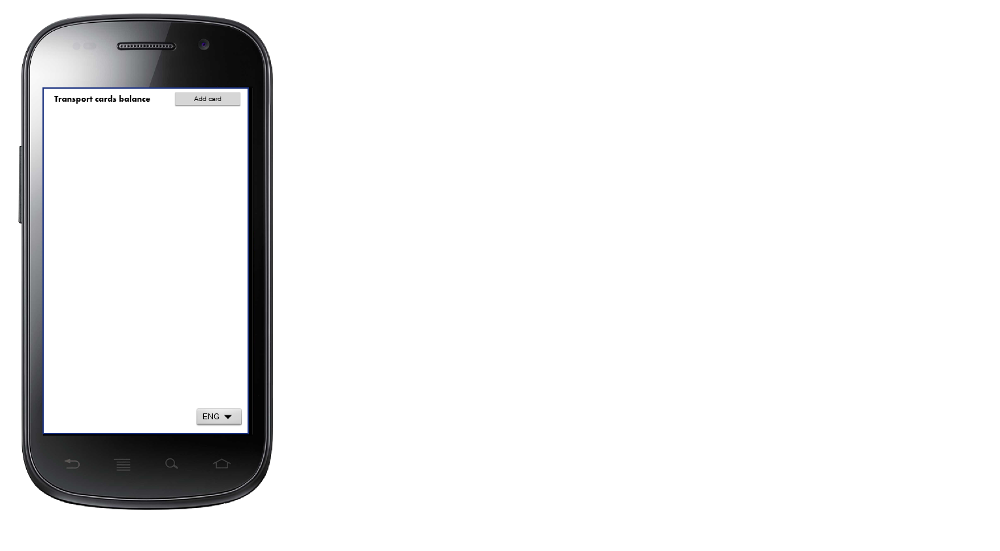
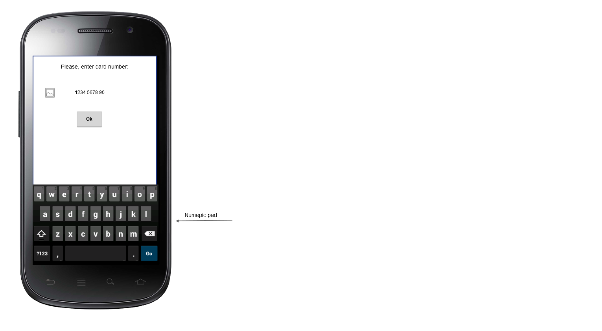

Transport card balance app
Exported at: Sat Aug 20 2016 21:06:04 GMT+0300
First start, no card added

When user click "Add card" button

Added card or start with stored card
Пользователь нажал кнопку "Добавить карту"
Когда карта добавлена или повторный запуск с сохраненными картами